Projekt i implementacja systemów webowych
Wykład 5: Tworzenie aplikacji SPA w Angularze
mgr inż. Maciej Małecki
Tradycyjna architektura aplikacji webowych
Przeglądarka
- użytkownik klika
- żądanie HTTP
- oczekiwanie…
- renderowanie całej nowej strony
Serwer
- odbiór żądania
- logika biznesowa
- pobranie danych z bazy
- wygenerowanie HTML
Przykłady: PHP + Smarty, JSP, Ruby on Rails, ASP.NET Web Forms
Problemy tradycyjnej architektury
- Każda interakcja = pełne przeładowanie strony — migotanie ekranu, opóźnienie
- Redundantne przesyłanie HTML przy każdym żądaniu (nagłówek, menu, stopka)
- Duże obciążenie serwera — renderowanie widoków po stronie serwera
- Trudna implementacja bogatego UI (walidacja na żywo, drag&drop, animacje)
- Ścisłe powiązanie frontendu z backendem — każda zmiana wpływa na obie warstwy
Single-Page Application
- Aplikacja pobierana jednorazowo (HTML + CSS + JS bundle)
- Nawigacja obsługiwana przez JavaScript — bez przeładowania strony
- Backend dostarcza tylko dane (JSON przez REST API lub GraphQL)
- Przeglądarka renderuje widoki dynamicznie — natychmiastowa reakcja na akcje
Zalety
- płynne UX (brak migotania)
- wyraźna separacja backend/frontend
- możliwość trybu offline (PWA)
Wyzwania
- czas pierwszego ładowania (TTI)
- złożona obsługa SEO
- JavaScript niezbędny do działania
Architektura aplikacji SPA
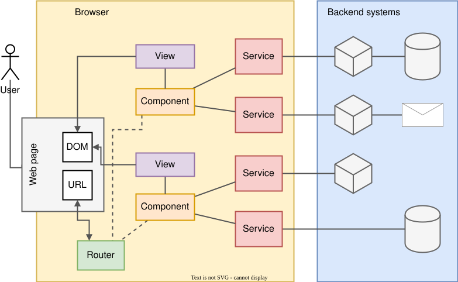
Popularne frameworki
Architektura komponentowa
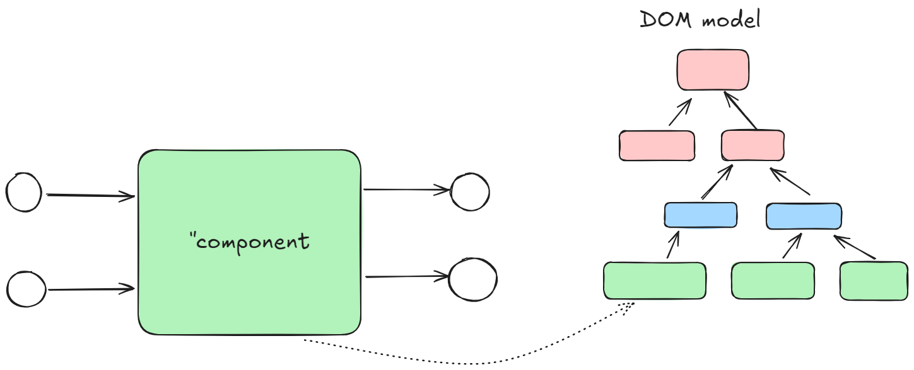
Angular: historia
- AngularJS - Google, 2010
- AngularJS: LTS ⇝ 2021-12-31
- Angular 2.0 - Google, 2016
- Brak kompatybilności między Angular i AngularJS
- UWAGA: zwracajcie uwagę na nazwy przeszukując zasoby sieciowe
Angular: architektura
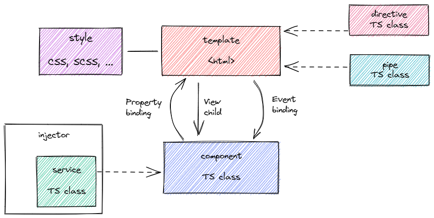
@Component({
standalone: true,
selector: 'app-hero-list',
templateUrl: './hero-list.component.html',
imports: [ NgFor, NgIf, HeroDetailComponent ],
providers: [ HeroService ]
})
export class HeroListComponent implements OnInit {
/* . . . */
}
Hero List
Select a hero from the list to see details.
-
Angular: środowisko developerskie
Node- środowisko uruchomieniowe dla JavaScriptNPM- ang. Node Package Manager - zarządzanie zależnościamiNPM registry- repozytorium bibliotekTypeScript- podstawowy język programowania dla Angular 2.x+Angular CLI- narzędzie linii poleceń wspierające proces tworzenia i budowaniaKarma, Jasmine, JEST, Protractor, Cypress- środowisko tworzenia testów
Środowisko developerskie w praktyce
Instalacja node ⇝ nvm
Instalacja Angular CLI
npm install -g @angular/cli
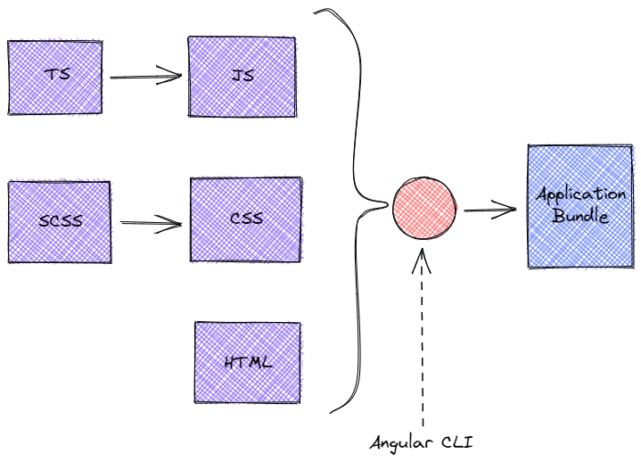
Wygenerowanie aplikacji Angular
$ ng new
? What name would you like to use for the new workspace and initial project? foo
? Do you want to enforce stricter type checking and stricter bundle budgets in the workspace?
This setting helps improve maintainability and catch bugs ahead of time.
For more information, see https://angular.io/strict Yes
? Would you like to add Angular routing? Yes
? Which stylesheet format would you like to use? SCSS [ https://sass-lang.com/documentation/syntax#scss ]
Zbudowanie aplikacji
ng build
Uruchomienie aplikacji
ng serve -o
Angular: podstawowe elementy
Moduł (NgModule)
- funkcjonalny blok aplikacji,
- sposób organizacji kodu,
- sposób zarządzania zależnościami,
- tworzenie kodu bibliotecznego,
- lazy-loading w przypadku dużych aplikacji.
Moduł ECMA Script oraz Moduł Angulara to dwie różne rzeczy!
@NgModule({
imports: [CommonModule],
declarations: [
MyComponent1,
MyComponent2,
MyExternalComponent3
],
exports: [MyExternalComponent3]
})
export class MyModule {
}
@NgModule- dekorator TypeScript- komponenty "należą" do modułu
- publiczne elementy modułu należy wyeksportować
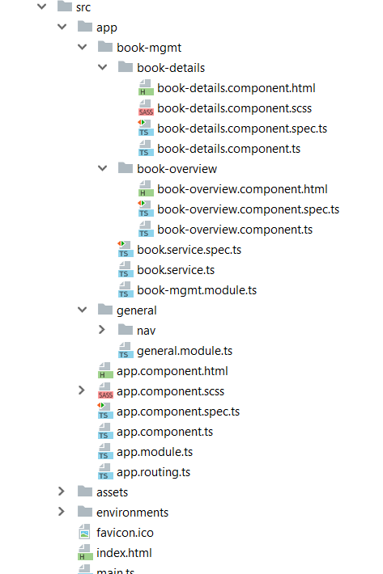
- Struktura katalogów może odzwierciedlać strukturę modułów.
- Przydaje się moduł general lub shared.
Komponenty "standalone"
- Moduły są opcjonalne począwszy od Angulara 14.
- Komponenty, dyrektywy oraz "pipes" można zadeklarować jako
standalone. - Komponenty mogą od teraz importować moduły.
- Komponenty (dyrektywy, "pipes") są self-contained.
Komponent
- Komponent jest podstawową jednostką budowania warstwy wizualnej aplikacji.
- Komponent może być wykorzystywany wielokrotnie.
- Komponent komunikuje się ze światem "zewnętrznym" w ściśle określony sposób.
ng generate component user-mgmt/user-list
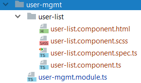
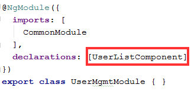
html- szablon - część wizualna, ang. template (opcja)scss- prywatny arkusz styli (opcja)component.ts- kod/kontroler komponentuspec.ts- testy jednostkowe komponentu (opcja)
Definicja wyglądu komponentu w HTML:
lub z użyciem zewnętrznego pliku:
user-list.component.html
Model DOM
DOM (Document Object Model) jest to model obiektowy reprezentujący dokument HTML wyświetlany przez przeglądarkę.
Przeglądarka buduje DOM w pamięci za każdym razem, gdy wyświetla HTML.
Każdy skrypt JavaScript (a więc także i każda aplikacja Angular) wchodzi w interakcję z DOM.
Postawowe API elementów DOM:
| atrybut | dodatkowa wartość definiująca tag (w dokumencie HTML) |
| właściwość | (property), właściwość obiektu DOM (zwykła właściwość obiektu w JS) |
| metoda | funkcja obiektu DOM, którą można wywołać |
| zdarzenie | (event) - informacja o zaistnieniu pewnego faktu, np click, focus, blur |
Data binding - wiązanie danych
Data binding są to mechanizmy pozwalające na integrację modelu z widokiem.
{{interpolation}} |
wyliczy wyrażenie wewnątrz {{}} oraz wstawi wartość |
[property_binding] |
Angular będzie aktualizował wartość właściwości na podstawie wyrażenia |
(event_binding) |
wywołana zostanie funkcja w reakcji na zaistnienie zdarzenia |
[(two_way_binding)] |
synchronizuje model z widokiem "w obie strony" |
Detekcja zmian
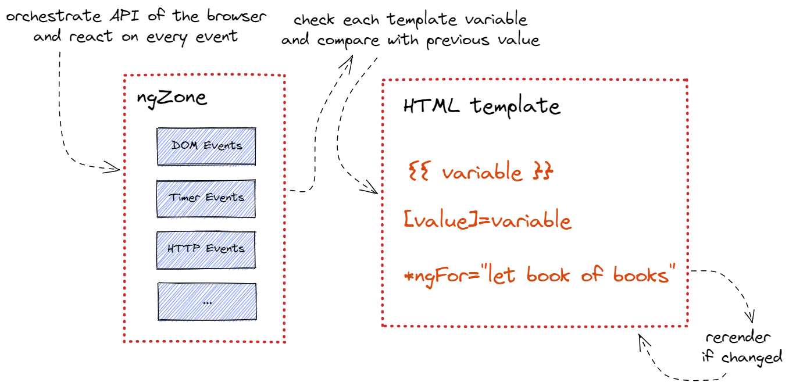
Cykl życia komponentu
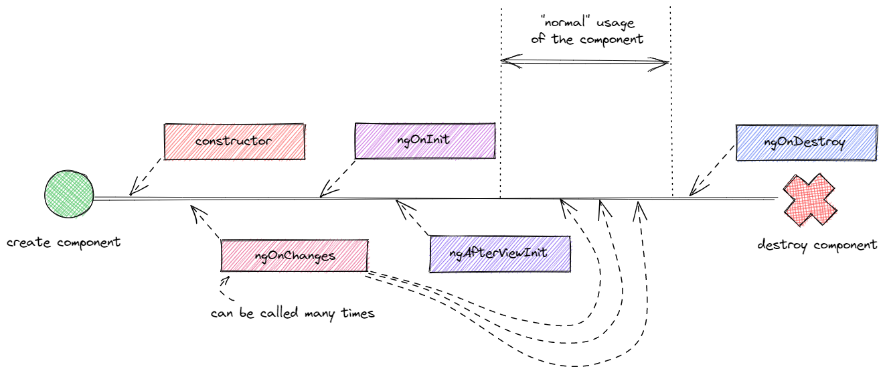
Dyrektywy
Dyrektywy to elementy rozszerzające funkcjonalność HTML, które można deklarować za pomocą Angular.
Istnieją trzy rodzaje dyrektyw:
- Komponenty (już je znamy)
- Dyrektywy atrybutowe
- Dyrektywy strukturalne
Dyrektywy atrybutowe
ngModel- wiążą pola edycyjne z modelemngClass- pozwalają dynamicznie modyfikować klasy CSSngStyle- pozwalają dynamicznie modyfikować style CSS
Dyrektywy atrybutowe
divClasses = {};
...
this.divClasses: {
'valid': this.isValid(),
'highlighted': this.isHighlighted()
}
W prostszych przypadkach...
Dyrektywy strukturalne
*ngIf - dodaje/usuwa element z
DOM:
*ngFor - iteruje po liście i
dodaje element DOM dla każdego elementu listy:
ngSwitch, *ngSwitchCase,
*ngSwitchDefault - odpowiednik instrukcji switch/case/default z innych języków
programowania.
Filtry (Pipes)
Pipe transformuje wartość wyświetlaną w szablonie.
Pipes można łączyć w łańcuch: {{ value | pipe1 | pipe2 }}
Wbudowane pipes
date | formatowanie daty i czasu |
currency | formatowanie waluty |
number | formatowanie liczb (miejsca dziesiętne) |
uppercase / lowercase | zmiana wielkości liter |
json | serializacja do JSON (do debugowania) |
async | subskrypcja Observable lub Promise |
AsyncPipe
Pipe async automatycznie subskrybuje Observable i anuluje subskrypcję przy niszczeniu komponentu.
// komponent
users$ = this.userService.getAllUsers();
Brak ręcznego subscribe() i unsubscribe() — eliminuje wycieki pamięci.
Komunikacja międzykomponentowa
Angular pozwala na stosowanie data bindings we własnych komponentach.
Dla danych wejściowych:
export class UserDetailsComponent
{
...
@Input() user: User;
...
}
Dla danych wyjściowych:
export class UserDetailsComponent
{
...
@Output() onChanged = new EventEmitter<User>();
...
this.onChanged.emit(user);
...
}
Required inputs
- Nowość począwszy od Angulara 16
@Input({required=true})- Wiązanie musi być określone, inaczej nastąpi błąd kompilacji.
Input tranforms
- Nowość począwszy od Angulara 16
@Input({transform: booleanAttribute})- Funkcja transformująca wartość.
Signals (Angular 16+)
Signals to nowy prymityw reaktywny — lżejsza alternatywa dla zone.js w zarządzaniu stanem komponentu i detekcją zmian.
signal(value)— reaktywna wartość powiadamiająca o zmianiecomputed(() => ...)— wartość wyliczana automatycznie z innych sygnałóweffect(() => ...)— efekt uboczny reagujący na zmiany sygnałów
export class CounterComponent {
count = signal(0);
doubled = computed(() => this.count() * 2);
increment() { this.count.update(v => v + 1); }
constructor() {
effect(() => console.log('count:', this.count()));
}
}
Signal-based inputs / outputs (Angular 17+)
export class UserCardComponent {
user = input.required<User>(); // zamiast @Input({required: true})
label = input('', {alias: 'title'}); // alias i wartość domyślna
changed = output<User>(); // zamiast @Output() + EventEmitter
}
Pełna integracja z computed() — reaktywność bez dekoratorów.
Routing
Jak działa przeglądarka?
- Obsługa pola adresowego URL
- Hiperlinki i przekierowania
- Historia przeglądania
Router jest modułem Angulara, który implementuje podstawowe funkcje przeglądarki (URL, historia) w aplikacjach typu Single-Page.
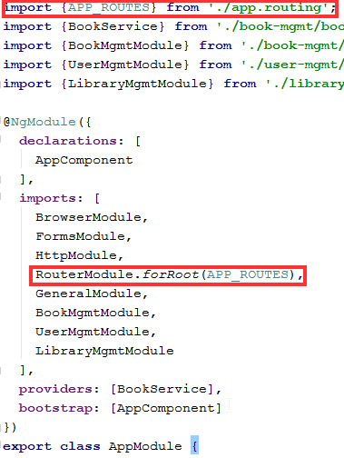
- Router to opcjonalny moduł Angulara
- Jedna instancja routera dla aplikcji
- Router inicjujemy tzw. tablicą przejść (ang. routes)
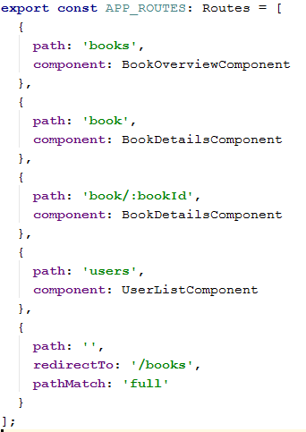
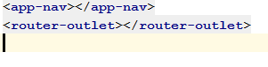
router-outlet określa miejsce, w którym Router będzie
"wklejał" nasz komponent.
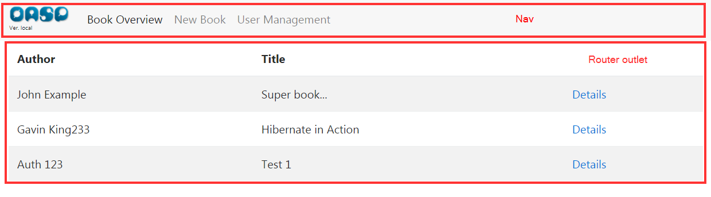
Więcej informacji na https://angular.io/guide/router.
Formularze
| Template-driven | Reactive | |
|---|---|---|
| Definicja struktury | Szablon HTML | Kod TypeScript |
| Testowanie | Wymaga DOM | Łatwe (czyste TS) |
| Walidacja | Dyrektywy HTML | Funkcje Validators |
| Dynamiczne pola | Trudne | Naturalne |
Preferuj Reactive Forms dla złożonych i testowalnych formularzy.
Reactive Forms — kod
export class UserFormComponent {
private fb = inject(FormBuilder);
form = this.fb.group({
name: ['', [Validators.required, Validators.minLength(3)]],
email: ['', [Validators.required, Validators.email]],
age: [null, Validators.min(0)]
});
onSubmit() {
if (this.form.valid) {
this.userService.saveUser(this.form.value as User);
}
}
}
Reactive Forms — szablon
Serwis
Serwis to współdzielony kod aplikacji:
- może posiadać stan
- posiada zasięg (scope) oraz cykl życia
- podlega mechanizmowi DI (dependency injection)
@Injectable()
export class UserService {
users: User[] = [];
constructor() {
this.users = [
{id: 1, name: 'John Doe', email: 'john.doe@email.com'},
{id: 2, name: 'Max Rockatansky', email: 'mad.max@email.com'},
{id: 3, name: 'Chuck Peddle', email: 'chuck@mos.com'}
];
}
getAllUsers() {
return this.users;
}
saveUser(user: User) {
const found = this.findUser(user.id);
if (found) {
Object.assign(found, user);
} else {
this.users.push(user);
}
}
findUser(id: number) {
return this.users.find((user: User) => user.id === id);
}
getNextId() {
return this.users
.map((elem: User) => elem.id)
.reduce((prev, curr) => prev > curr ? prev : curr, 0) + 1;
}
}
RxJS i Observable
HttpClient (i wiele innych części Angulara) zwraca Observable z biblioteki RxJS.
Observable— strumień danych (zero lub więcej wartości w czasie)- Observable jest leniwy — nic się nie dzieje bez
subscribe() Subscription— aktywna subskrypcja; należy ją anulować (unsubscribe()), aby uniknąć wycieków pamięci- Operatory (
map,filter,switchMap…) transformują strumień
const users$ = this.userService.getAllUsers(); // Observable — nic się nie dzieje
const sub = users$.subscribe({
next: users => this.users = users,
error: err => console.error(err),
complete: () => console.log('done')
});
ngOnDestroy() {
sub.unsubscribe(); // obowiązkowe!
}
Preferuj AsyncPipe w szablonie — zarządza subskrypcją automatycznie.
Popularne operatory RxJS
map | transformacja emitowanej wartości |
filter | pomijanie wartości niespełniających warunku |
switchMap | zamiana strumienia na inny (np. kolejne żądanie HTTP po kliknięciu) |
catchError | przechwycenie i obsługa błędu w strumieniu |
takeUntilDestroyed | automatyczne unsubscribe() przy niszczeniu komponentu (Angular 16+) |
HttpClient
Architektura Smart-Dumb
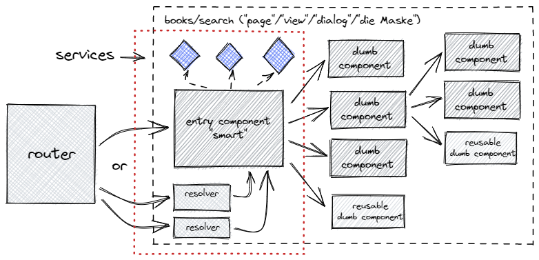
Bibliografia
- https://angular.io/docs, a w szczególności:
- https://blog.thoughtram.io/, a w szczególności: